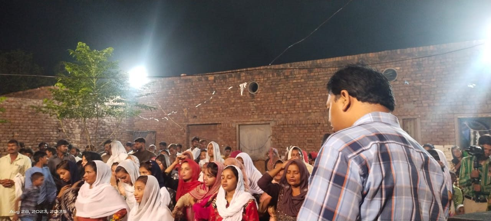
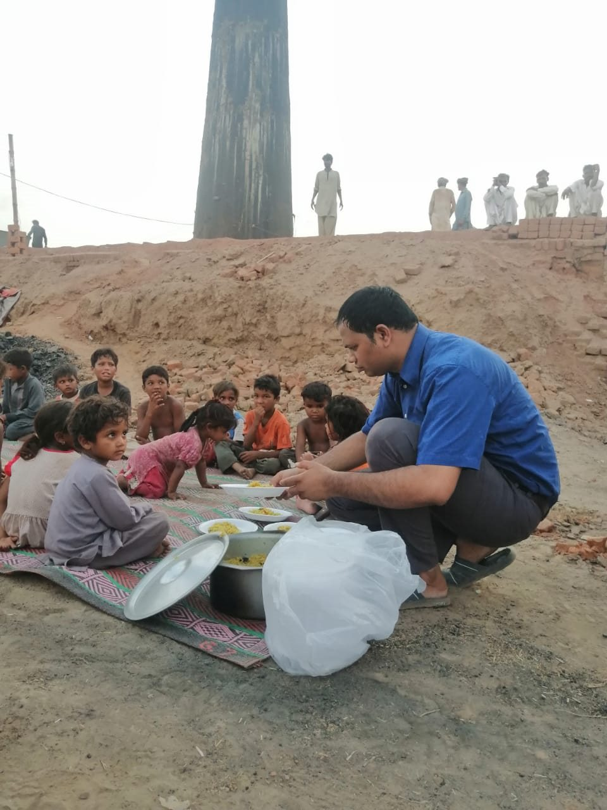
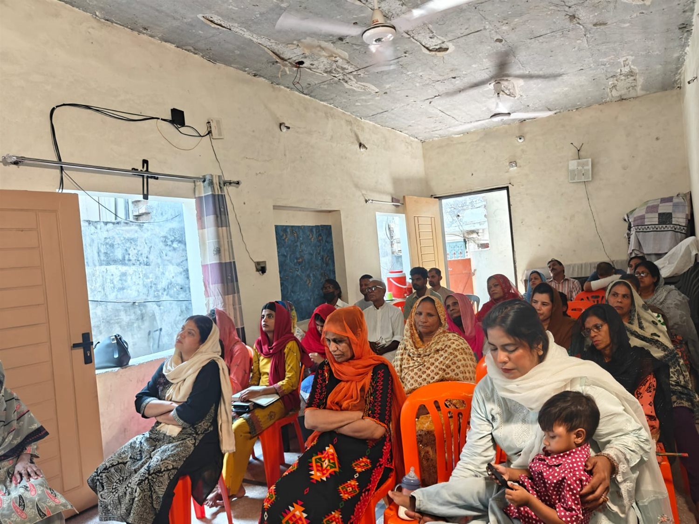
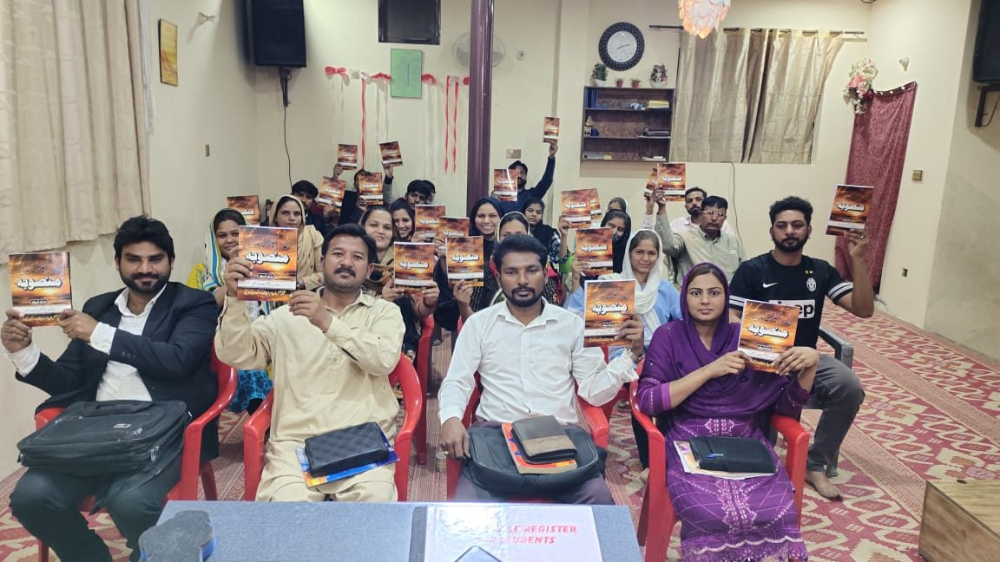
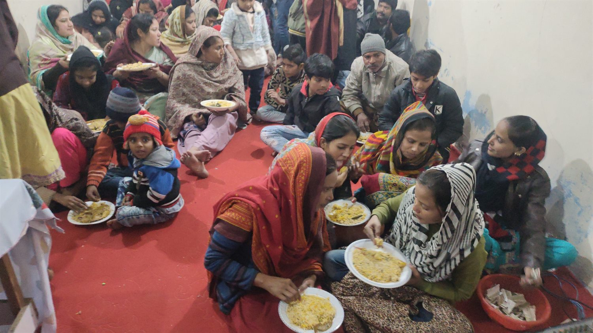
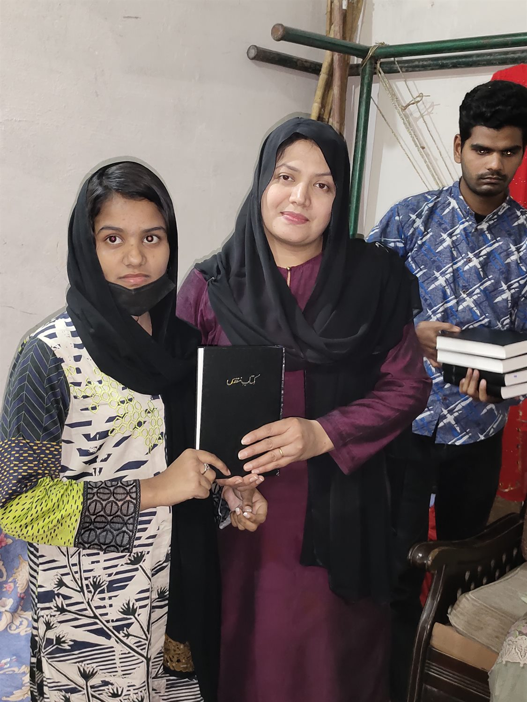
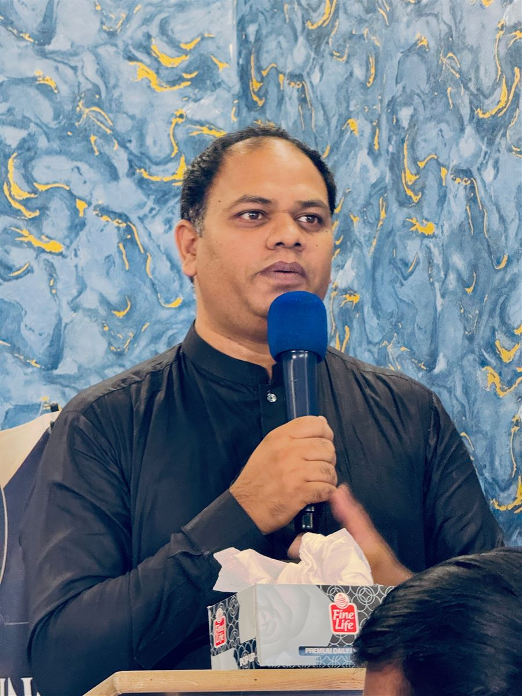

01 · Share the Gospel
Outreach
Sharing the Gospel in villages, towns, and cities through community gatherings, prayer, and discipleship.
Explore this ministryLahore, Pakistan
We share the Gospel, help people grow in faith, and serve children and families in communities across Pakistan.

Faith expressed through careFaith, compassion, and practical care
The Will of the Father Organization is a Bible-based Christian ministry in Lahore, Pakistan. We share the hope of Jesus through church life, Gospel outreach, Bible teaching, prayer, and practical support for children and families.
Our small church is a place for Sunday worship and other ministry activities. From this local community, we serve neighbors and welcome people who want to learn more about our work.
Get to know the organizationHow we serve
From church gatherings to neighborhood outreach, we seek to share the Gospel and care for people in practical ways.

Sharing the Gospel in villages, towns, and cities through community gatherings, prayer, and discipleship.
Explore this ministry
Our small church in Lahore hosts Sunday services and other ministry activities.
Explore this ministryWe serve children and families with practical care, meals, and Bible teaching, including in brick-kiln communities.
Explore this ministry Learning and discipleship
Learning and discipleshipWho we are
The Will of the Father Organization is a Bible-based Christian ministry based in Lahore, Pakistan. We seek to glorify God by sharing the Gospel, helping people grow as disciples of Jesus, and serving our neighbors with compassion.
We believe God’s love calls us to care for one another. That conviction guides our church life, outreach, teaching, prayer, and practical support for children and families.
We welcome churches and Christian ministries around the world to learn about our work and begin a conversation about prayer, connection, or possible partnership.
Explore international partnershipA glimpse of our ministry
A few moments from worship, learning, outreach, and practical care in the communities we serve.





He loved us, so we love others.
Our motivation for ministry
Our foundation
Our faith in Jesus Christ is at the center of everything we do.
We believe the Bible is the inerrant Word of God and has supreme authority for faith and conduct. We believe there is one God, eternally existing in three persons: the Father, the Son, and the Holy Spirit.
We believe Jesus Christ is the Son of God, that He died for our sins, and that He rose from the dead. We believe salvation is through faith in Christ alone. We believe Christ will visibly return, that those who belong to Him will enjoy eternal life, and that those who do not will face eternal separation from God.
Partner with us
Your support can help us continue outreach, Bible teaching, and practical care for children and families. We can receive donations by bank transfer or Western Union.
For bank transfer or Western Union instructions, email or WhatsApp us. Email · WhatsApp. Learn about international partnership
Stay connected
For prayer, ministry information, or donation instructions, email us:
thewillofthefatherpk@gmail.com
Lahore, Pakistan